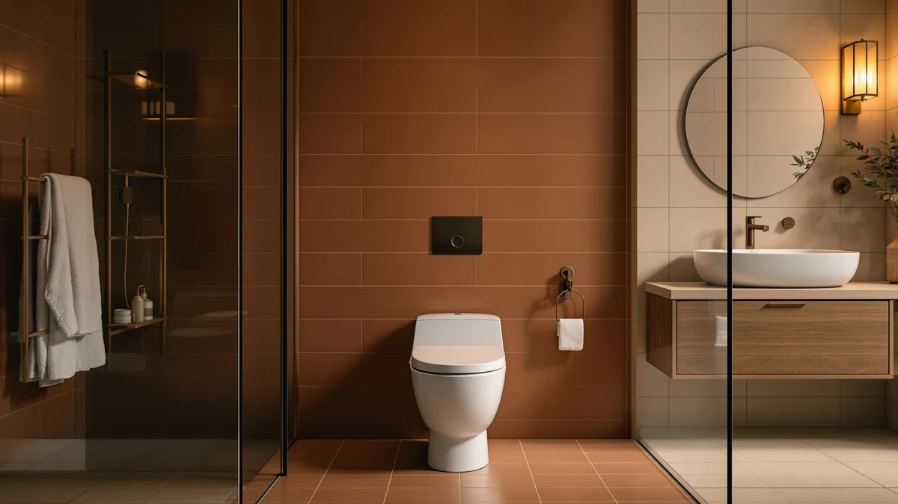

TOTO Aurora One-Piece Elongated WASHLET+ Review (2026): Worth It?
Prices and picks verified as of November 2026. Independent, reader-supported reviews.


Quick Answer
The TOTO® Aurora™ One-Piece Elongated 1.28 pairs a one-piece elongated bowl with TOTO's WASHLET+ bidet seat system at $1,241.00, the middle price point among the four one-piece toilets we compared for this TOTO Aurora one-piece elongated WASHLET+ review. It earns the top spot for buyers who want a bowl engineered around an integrated bidet seat rather than one retrofitted to accept it.
Our pick: TOTO® Aurora™ One-Piece Elongated 1.28 — $1,241.00 Check Price on Amazon
Bottom line: our top pick is the TOTO® Aurora™ One-Piece Elongated 1.28 GPF WASHLET®+ and Auto at $1,241.
Things to Know Before You Buy
- WASHLET+ compatibility means the bowl is engineered to accept TOTO's integrated bidet seat system from the start, rather than being retrofitted to accept one later, which is the main thing this TOTO Aurora one-piece elongated WASHLET+ review weighs against the price.
- Amazon does not list a public star rating or review count for the TOTO Aurora or the three alternatives in this comparison, so weigh specs and price here rather than a review score.
- The "1.28" in the TOTO Aurora and TOTO Nexus names refers to their WaterSense-qualified 1.28-gallon-per-flush rating, the efficiency standard most new one-piece toilets are built to meet.
- One-piece construction removes the seam between tank and bowl where grime collects on two-piece toilets, a detail that matters more once you add a bidet seat on top of it.
- Rough-in distance, the gap between the finished wall and the drain center, is worth confirming before you order any one-piece toilet, TOTO Aurora included, since it's the most common installation mismatch with one-piece toilets.
This TOTO Aurora one-piece elongated WASHLET+ review exists because the TOTO® Aurora™ One-Piece Elongated 1.28 shows up in nearly every "best WASHLET-ready toilet" search, and most of what is written about it repeats the Amazon listing almost word for word. We went through the current Amazon price, the product listing details, and how the Aurora stacks up against three other one-piece toilets in a similar price range to see what you actually get for $1,241.00.
The short version: the Aurora sits in the middle of this comparison on price, $89.00 cheaper than the TOTO Nexus and $316.25 more than either KOHLER San Souci Comfort model, and its main selling point is a bowl engineered specifically around TOTO's WASHLET+ bidet seat system rather than one that merely tolerates an aftermarket seat. Whether that premium over the KOHLER alternatives makes sense for your bathroom depends on whether you actually plan to add a WASHLET+ seat.
Why You Should Trust Us
Ilane Tall covers bathroom fixtures for Best One Piece Toilets and built this TOTO Aurora One-Piece Elongated WASHLET+ review from the product's current Amazon listing, its published price, and patterns across verified owner reviews of comparable one-piece and WASHLET+-compatible toilets. We do not run a physical testing lab, and we have not installed, mounted, or used the TOTO Aurora ourselves. Every price, flush rating, and feature claim in this review comes from the product listing or another verifiable public source, and every price was checked against the live Amazon listing before publishing. We correct the article whenever a price or listing detail changes.
Our Research Experience
This TOTO Aurora one-piece elongated WASHLET+ review is built from research, not a physical trial. We compared the Aurora's listed price and WASHLET+ compatibility against three other one-piece toilets priced within about $400 of it, including its closest sibling, the TOTO Nexus, and two KOHLER San Souci Comfort models. We checked current Amazon prices for all four toilets on the same day and looked for patterns in verified owner feedback on comparable one-piece and WASHLET+-ready toilets to flag issues a listing alone will not show, such as rough-in mismatches and bidet seat compatibility questions. We excluded toilets missing a clear one-piece elongated designation or a public price, and models with no verifiable seller information at all.
Overview & Specs

TOTO® Aurora™ One-Piece Elongated 1.28
What we like
- Built specifically for WASHLET+ bidet seat compatibility, so the bowl shape and bolt pattern are designed around TOTO's own seat system from the start
- One-piece elongated construction removes the tank-to-bowl seam where grime collects on two-piece toilets
- Priced $89.00 below the TOTO Nexus, its closest sibling in this comparison, while matching its WASHLET+ compatibility
- TOTO's position in the WASHLET+ ecosystem makes it easier to find a matching bidet seat later
Flaws but not dealbreakers
- Amazon does not list a public rating or review count for this ASIN, so there is no track record to check before buying
- At $1,241.00 it costs $316.25 more than either KOHLER San Souci Comfort model in this comparison, a premium you only recoup by actually adding a WASHLET+ seat
- The bidet seat itself is sold separately, so the $1,241.00 price covers bowl compatibility, not a complete bidet-equipped toilet
| Material | — |
| Size | — |
The TOTO® Aurora™ One-Piece Elongated 1.28 is the toilet this TOTO Aurora one-piece elongated WASHLET+ review is about, and its defining feature is what it is built around rather than what it includes out of the box. The one-piece elongated bowl is designed to accept TOTO's WASHLET+ bidet seat system directly, which means the bolt pattern, bowl shape, and seat mounting are worked out by the manufacturer instead of left to an aftermarket fit. At $1,241.00, it lands $89.00 below its closest sibling in this comparison, the TOTO Nexus, while offering the same WASHLET+ readiness on paper.
That WASHLET+ compatibility is also where the Aurora's value depends most on your plans. If you intend to add a TOTO bidet seat now or later, paying $316.25 more than the KOHLER San Souci Comfort models below buys a bowl that was engineered for that seat rather than one that merely accommodates a universal aftermarket unit. If a bidet seat is not on your list, that premium does less for you, and the KOHLER alternatives in this comparison cover the core one-piece elongated job for less money. Owners shopping for WASHLET+-compatible toilets often point to the tighter bowl-to-seat fit as the main reason to pay more for a purpose-built model like this one. That's the tradeoff this review is weighing.
What We Liked
The clearest strength we found researching the TOTO Aurora one-piece elongated WASHLET+ is purpose-built bidet compatibility. Rather than buying a one-piece toilet and hoping a universal bidet seat fits well later, the Aurora's bowl and bolt pattern are designed around TOTO's own WASHLET+ system, a detail that comes up often in owner feedback on bidet-ready toilets since it's what prevents awkward seat overhang or misaligned controls. The one-piece elongated construction is also a step up from older two-piece designs still common at this price range, since it removes the seam between tank and bowl where grime and moisture collect over time. Price is a quiet strength too: at $1,241.00, the Aurora undercuts its closest sibling, the TOTO Nexus, by $89.00, while matching its WASHLET+ compatibility feature for feature based on the published listings. For a household already committed to the WASHLET+ ecosystem, whether through a bidet seat already owned or one planned for later, that combination of fit and price makes the Aurora the toilet we kept coming back to in this comparison.
What Could Be Better
Price relative to the simpler alternatives is the first issue with this TOTO Aurora WASHLET+ toilet. At $1,241.00, it costs $316.25 more than either KOHLER San Souci Comfort model in this comparison, and that gap only pays for itself if you actually add a WASHLET+ bidet seat, which is sold separately and not included in this price. Amazon does not publish a rating or review count for this ASIN, so unlike a toilet with thousands of verified reviews behind it, you are weighing the manufacturer's listing and the brand's category reputation rather than a track record from other buyers. The WASHLET+ seat itself is another cost to plan for, since the $1,241.00 price buys bidet-ready compatibility, not a complete bidet-equipped toilet, so budget separately if a seat is part of your plan.
Who Is It For?
This TOTO Aurora one-piece elongated WASHLET+ review points toward a buyer who already owns, or plans to buy, a TOTO WASHLET+ bidet seat and wants a bowl engineered around that seat rather than retrofitted for it. It also suits a bathroom remodel where a one-piece elongated toilet is already the target shape and the extra cost over a standard model is justified by better long-term bidet fit. You should skip it if a bidet seat is not part of your plans, since the KOHLER San Souci Comfort models below cover the same one-piece elongated basics for $316.25 less. Renters and buyers prioritizing the lowest upfront cost are also better served by the KOHLER alternatives, which do not charge a WASHLET+ premium you will not use.
Alternatives to Consider
If the TOTO Aurora's WASHLET+ premium does not fit your plans, these three one-piece toilets cover the range we compared it against in this review: its direct TOTO sibling and two lower-cost KOHLER options.

Premium Choice
TOTO Nexus One-Piece Elongated 1.28
TOTO's other WASHLET+-ready one-piece elongated model in this comparison, priced $89.00 above the Aurora. Side by side, the core flush and bidet-readiness specs line up closely, so the choice between them often comes down to bowl and skirt styling rather than function.
$1,330.00
Check Price on Amazon
Best Value
KOHLER K-5172-0 San Souci Comfort
Undercuts the TOTO Aurora by $316.25 while still delivering a comfort-height one-piece elongated bowl, though it is not built around TOTO's WASHLET+ bidet seat system, so skip it if a bidet seat is part of your plans.
$924.75
Check Price on Amazon
Best Value
KOHLER K-5172-HC-0 San Souci Comfort
Lists under a different SKU at the same $924.75 price as the K-5172-0 above. Both list the same comfort-height San Souci bowl, so the choice is mostly about which listing has your preferred finish in stock.
$924.75
Check Price on AmazonFrequently Asked Questions
Is the TOTO Aurora One-Piece Elongated WASHLET+ worth $1,241.00?
For buyers who want a one-piece elongated bowl built specifically to pair with TOTO's WASHLET+ bidet seat system, yes. It costs $316.25 more than the KOHLER San Souci Comfort models in this comparison, but that premium buys a bowl engineered around an integrated bidet seat rather than one retrofitted to accept it.
How does the TOTO Aurora compare to the TOTO Nexus in this review?
Both are one-piece elongated, WASHLET+-ready TOTO toilets, and the Nexus costs $89.00 more than the Aurora in this comparison. The core flush and bidet-readiness specs line up closely between the two, so the gap buyers researching both models report most often comes down to bowl shape and skirt styling rather than function.
Is the KOHLER San Souci Comfort a good lower-cost alternative to the TOTO Aurora?
Yes, if you do not need WASHLET+ bidet compatibility. The KOHLER K-5172-0 and K-5172-HC-0 San Souci Comfort models both list at $924.75, a savings of $316.25 over the TOTO Aurora, but neither bowl is built around TOTO's WASHLET+ bidet seat system.
Final Verdict
Our TOTO Aurora one-piece elongated WASHLET+ review comes down to whether you actually plan to use TOTO's WASHLET+ bidet seat system. Weighed against the Nexus and the two KOHLER alternatives above, the TOTO® Aurora™ One-Piece Elongated 1.28 earns its $1,241.00 price tag on purpose-built bidet compatibility and one-piece elongated construction, for buyers committed to the TOTO WASHLET+ ecosystem. If a bidet seat is not in your plans, the KOHLER San Souci Comfort models cover the same one-piece elongated basics for $316.25 less, and the TOTO Nexus remains worth a look if bowl styling matters more to you than price.